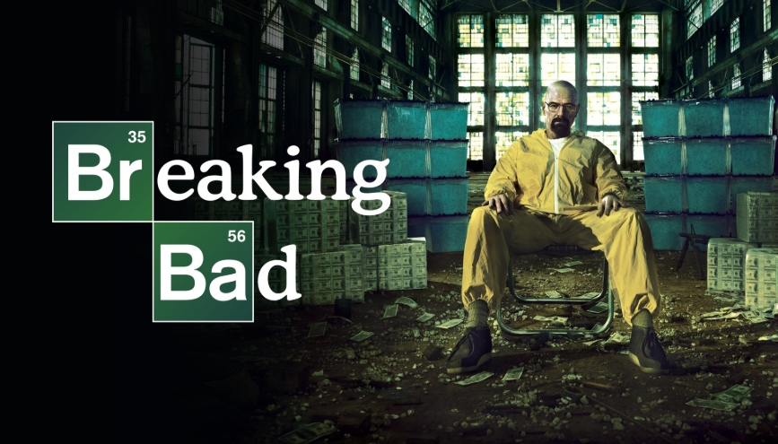

BREAKING BAD
En un mundo donde la moral se desintegra y el poder lo es todo, la vida de Walter White, un profesor de química convertido en fabricante de metanfetaminas, da un giro oscuro hacia la desesperación y la ambición sin límites. Lo que comienza como un intento de asegurar el futuro de su familia, se transforma en una peligrosa espiral de crimen, traición y desesperación. Con cada paso hacia el abismo, Walter se enfrenta a la lucha por su alma, mientras la línea entre lo correcto y lo incorrecto se difumina en su incontrolable camino hacia el poder.